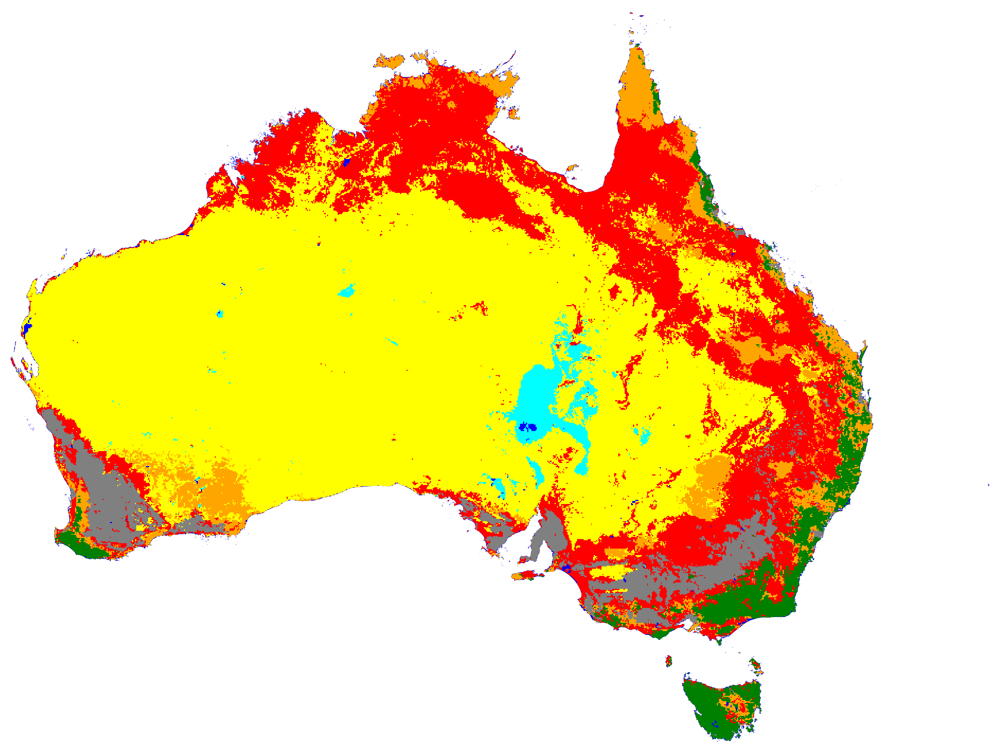
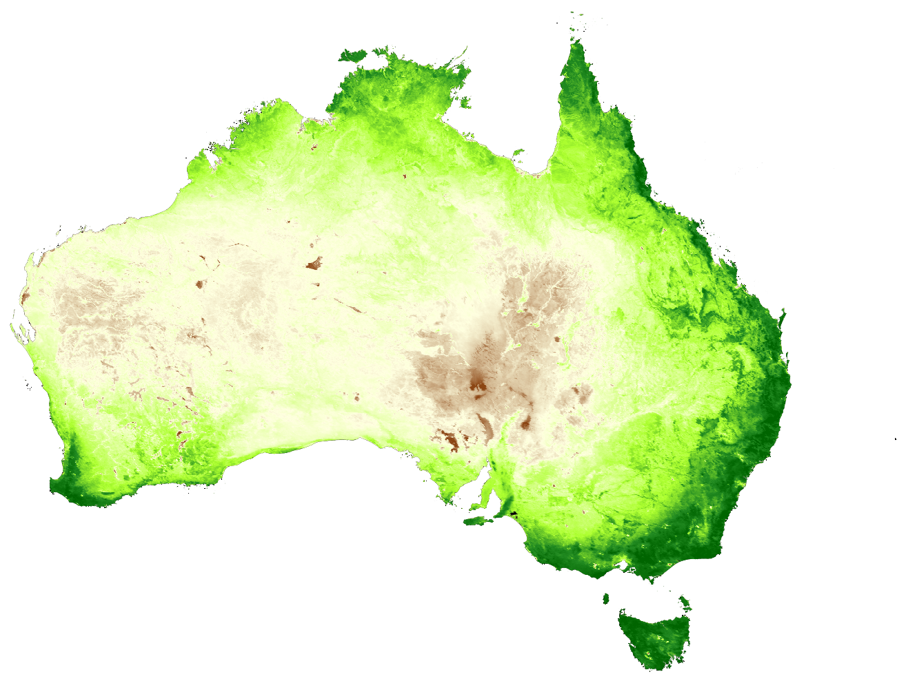
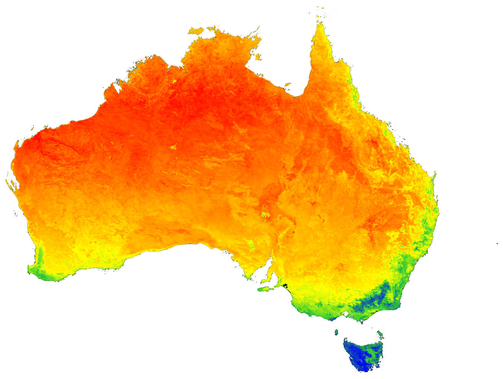
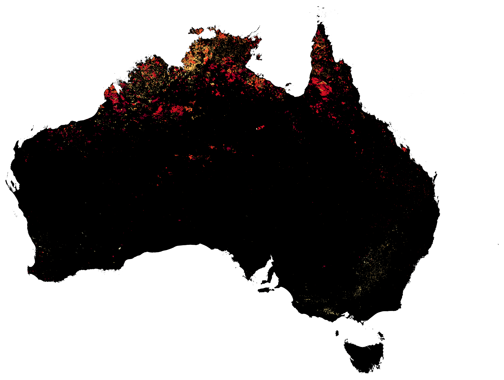
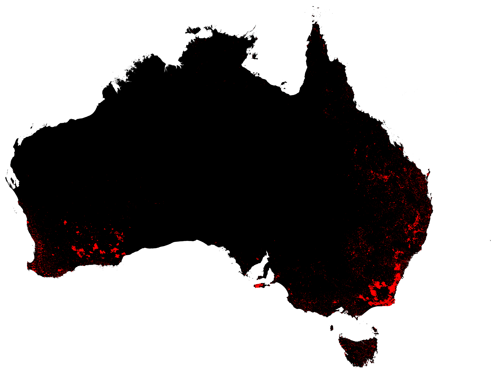
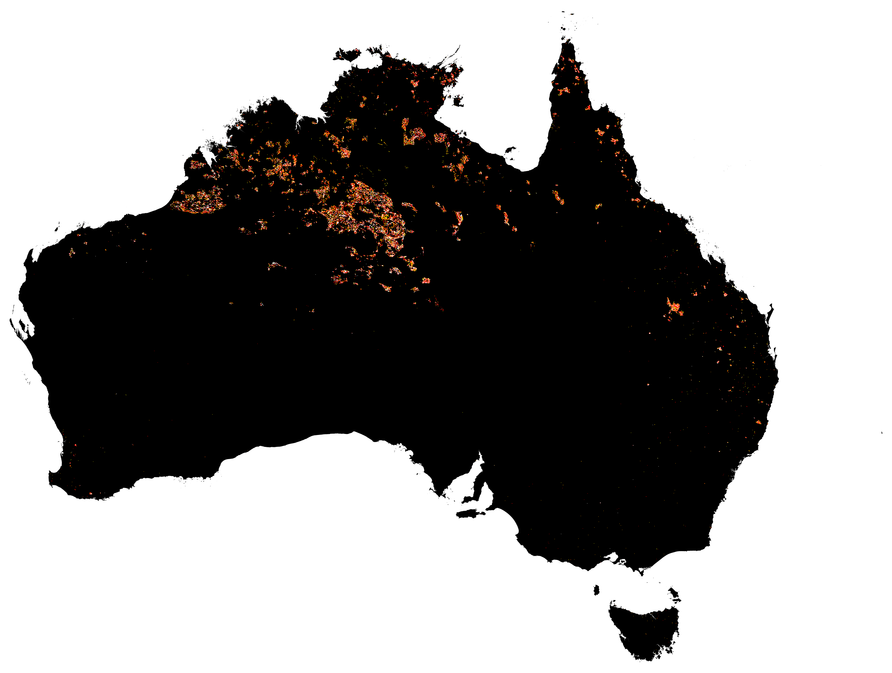

Land Cover🌍 Land Cover 2022
Eight aggregated IGBP classes derived from the MODIS annual land-cover product. Captures the broad ecological zonation of Australia.
Burned area · Fire · LST · Land cover · NDVI · Forest loss
Six satellite-derived maps covering the Australian continent. Each layer captures a distinct environmental signal — tap any card to expand it full-screen.

Land CoverEight aggregated IGBP classes derived from the MODIS annual land-cover product. Captures the broad ecological zonation of Australia.

VegetationTwelve-year mean of the Normalized Difference Vegetation Index. Reveals the contrast between coastal productive zones and the arid interior.

TemperatureMean daytime land surface temperature in °C. Hotspots reach above 45 °C in the central deserts and the Pilbara.

FireMaximum burn-date composite for 2021. Pale yellows are early-season burns, deep reds are late-season. Reveals the annual fire cycle across northern savannas.

ForestStand-replacement forest loss over three years. Concentrations appear along the east coast (NSW, Queensland) and in southwest WA.

FireActive-fire detections classified by brightness temperature. Five classes — cool (yellow) through extreme (dark red).